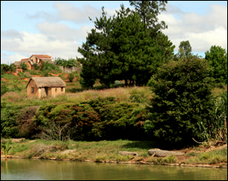
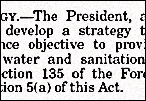
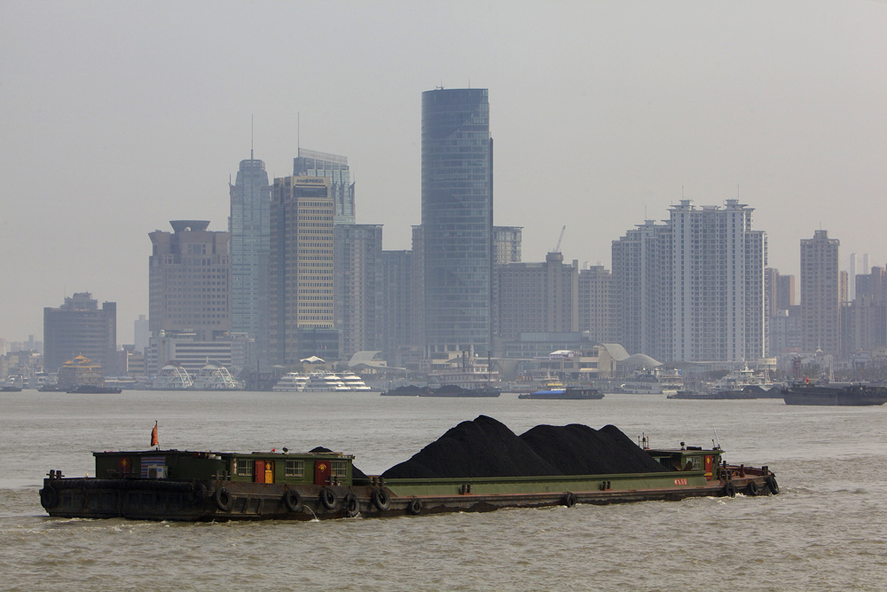
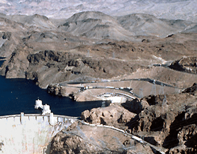
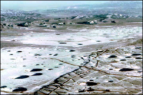

Madagascar Cancels Water Deal with Saudi Arabia

Madagascar’s government has ended a water export deal with Saudi Arabia because it was opposed by environmental, civil society groups in the country.A proposed deal to export water from the Faraony River in Madagascar to Saudi Arabia has been canceled, Global Water News Watch reports.
The deal would have redirected one percent of the river’s flow at the mouth – approximately 260,000 cubic meters per day – for export, creating daily revenues of $60,000, according to MadOnline.
The government planned to use the revenues to invest in water supply projects in arid southern Madagascar, according to MadOnline.
Madagascar’s green party, Hasin’i Madagasikara, opposed the sale, arguing that it would cause ecological damage to the river system, MadOnline also reported.
The water sector in Madagascar has been in tumult since a separate water ministry was created last year, according to Richard Marcus, a Madagascar expert at California State University, Long Beach.
'Legal jurisdiction since the creation of the water law in 1999 has consisted of overlapping institutions,' Marcus told Circle of Blue.'In addition, heavy turnover in the ministries has made it difficult to create deals.Once the minister who floated the deal leaves, the deal goes with it.'
Financial transactions involving Madagascar’s natural resources have been the cause of political turmoil recently.A proposed lease of half the country’s arable land to South Korea’s Daewoo Logistics brought public protests and the collapse of the government in March of this year.
'In the constitution, it is stipulated that Madagascar’s land is neither for sale nor for rent, so the agreement with Daewoo is cancelled,' the current president Andry Rajoelina told the BBC.
The nascent water ministry was just starting to get its bearings when the political crisis began — which hampered its work, Marcus said.
Madagascar has relatively abundant water resources.Surface runoff from within its borders is 19,925 cubic kilometers per capita, according to the World Resources Institute.The average for sub-Saharan Africa is 5,705 km
3 /capita.In comparison, Saudi Arabia’s average is 111 km
3 /capita.
Saudi Arabia is looking beyond its borders to secure water supplies absent from its territory.The Madagascar deal was for raw water, but the Saudi government, like other Gulf States, is also looking to conserve water by acquiring agricultural land abroad.The kingdom is gradually phasing out its wheat self-sufficiency program and shifting production to countries with more favorable water conditions.
Source: Global Water News Watch
Watch for Circle of Blue’s special report on outsourcing agriculture next week.
Brett writes about agriculture, energy, infrastructure, and the politics and economics of water in the United States.He also writes the Federal Water Tap, Circle of Blue’s weekly digest of U.S. government water news.He is the winner of two Society of Environmental Journalists reporting awards, one of the top honors in American environmental journalism: first place for explanatory reporting for a series on septic system pollution in the United States(2016) and third place for beat reporting in a small market (2014).He received the Sierra Club’s Distinguished Service Award in 2018.Brett lives in Seattle, where he hikes the mountains and bakes pies.Contact Brett Walton
Posted On: 2009-11-14T00:00:00
Posted By: Brett Walton




Content Date: 2009-11-14
Download Date: 2021-05-12
Document ID: L0C04BJ8Y